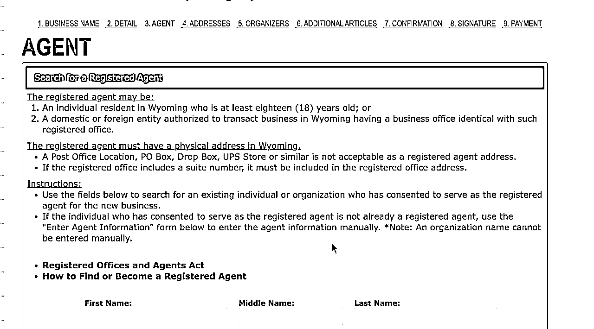
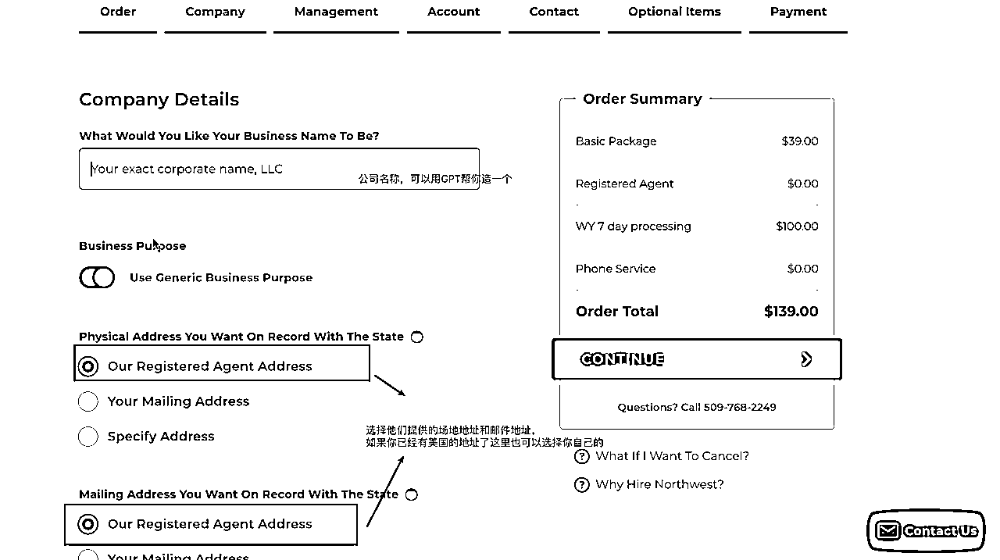

来源：https://cijczs95il.feishu.cn/docx/XVbidP1jQoa9LtxINW7cG9rfnkh
接下来的注册流程会有点繁琐，如果不想自己动手去操作，可以直接用托管平台Firstbase去注册，Firstbase包括公司注册，代理服务，会计审计，地址租用这些服务。好处是可以不用费心，直接按步骤操作就行，而且速度也快。缺点就是价格会贵挺多，价格如下：
Firstbase 注册费用 $399
地址邮箱每年 $350
公司代理（含年报、税务申报工具）每年 $299
一般我们就用上面三个服务就够了，所以下面也给出相应的三个服务优惠码：
Firstbase Start（注册公司用）优惠码：STARTFUSHENCHEN0XUR72B71A
Firstbase Mailroom（地址邮箱）优惠码：MAILROOMFUSHENCHEN0XUR72B71A
Firstbase Agent（公司代理） 优惠码：AGENTLTFUSHENCHEN0XUR72B71A
我一开始用的是firstbase，花了399开始注册，但是付完钱后觉得太贵就找firstbase进行退款。他们支持七天内退款，同时资料没有提交上去的用户可以退款。
公司注册很多州都需要当地人作为代理，或者当地公司，比如怀俄明州的规定如下：

所以这里DIY就不是很好的选择，我们直接选择northwestregisteredagent代理商进行公司注册。只需要39
州我们这里选择怀俄明州。具体有哪些州，然后这么选，我下篇文章详细说在。目前来说，非美国人在美国注册公司最多的三个州分别是特拉华州、怀俄明州、内华达州。这三个州由于相对较低的运营费用以及低税免税政策被视为“公司友好型”州。
公司取名倒是没有什么特别限制，有限责任公司名称必须包含“LLC”的形式就行。比如“xxx LLc"。

大概花了三天的时间就办理完了
这个速度还是很快的，三天就下来。但是我自己花费了10多天，就是在一开始选择firstbase然后退费花了很久的时间。
到了这一步，你就已经拥有了一个美国的公司的了，但是这个时候你还是不能去申请美国的银行卡。你还需要接着申请EIN。
申请EIN，也是我们选择便宜方案需要付出的劳额外动了。
填写模版如下：
可以在fax.plus注册，不过这里有点小问题的地方就是在于，注册的时候需要登录美国IP，然后使用美国号码注册，否则无法使用到美国的传真号，费用是8.9$一个月。如果有需要的，我可以免费帮各位发送传真。
发送ssr的时候，最好是要把Articles Of Organization文件首页合并发送过去
Articles Of Organization文件可以在后台找到
把这个首页合并进去就可以了，增加通过率。
一周左右，fax.plus会收到邮件的。
这部分我还在等申请结果，需要等待2-3天。如果使用FIrstbase平台会继续帮你申请，申请的速度很快，有一天就拿到的。我自己申请的如果有进展了，就再更新出来。
Wise好处多多，可以直接转帐国内，而且汇率还有优势。Wise注册美区很方便，但是需要一个美国地址（要公正）和美区电话。如果注册国区的话直接用护照和国内地址就可以了。只是国区的有限制每年转帐内不超过50000USD，一天不超过10000USD
wise入金可以使用duppy，通过欧易购买USTD，转到duppy。
我这一步还没有走完，因为我够买的USTD被风控一天，需要第二天才能操作，后续进展我在继续更新。
当然最简单的就是直接淘宝下单帮忙入金了，大家可以自己搜索。
注：
duppy只能港台地区的appleid可以下载，需要的话我也有注册，或者自己注册一个也很快。
Strip账号还没有来的及注册，等注册完了继续更新
以上就是我半自动注册美国公司的流程，这里其实还有关于地址公正的部分没有说，那个也可以DIY，我表格都填好了，但是发现官网提交要70$,但是区fivver找人公正只需要20$左右。
总的费用花费如下：
公司注册：139
国际驾照：18¥
传真：8.99
美区手机卡：Dashi SIM 卡费15欧+运费18欧 =255¥
总共：1356¥
时间花费：需要12天左右